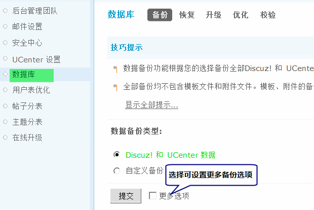
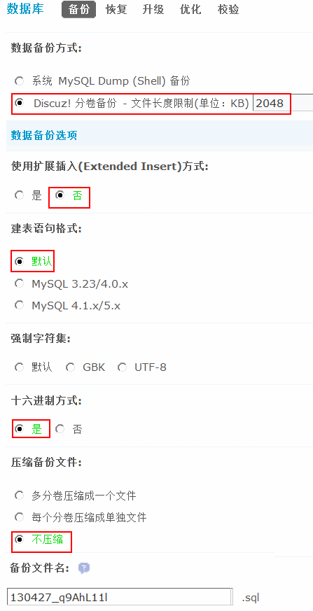
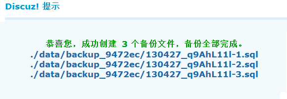
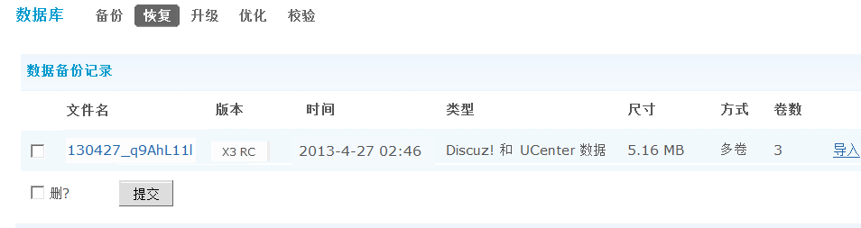
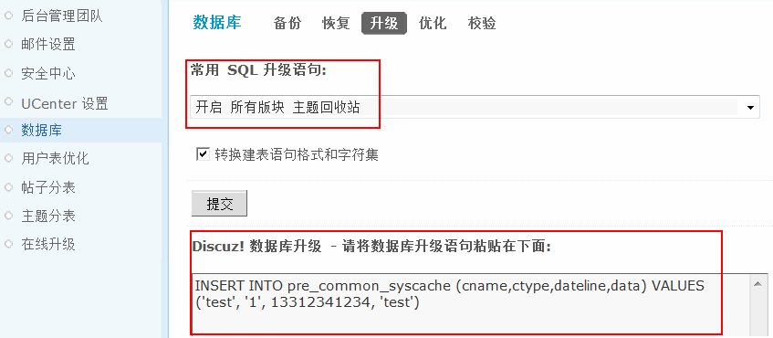
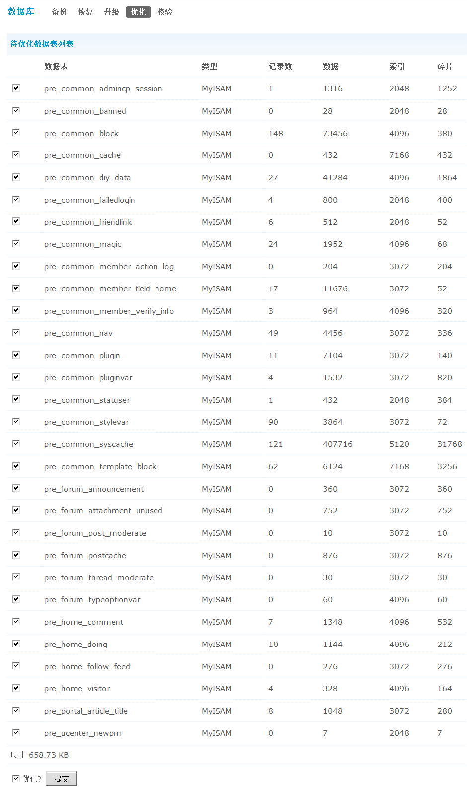
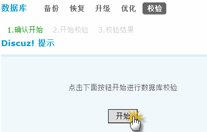
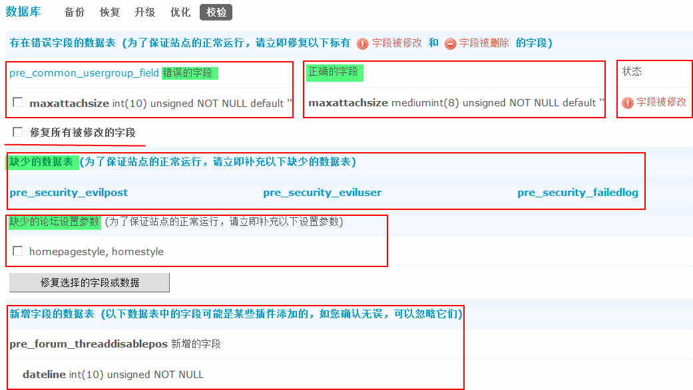

数据库
Discuz! 为站长提供了非常强大的数据库管理功能，可以一键完成诸如数据库备份、恢复、升级、优化、校验等操作。具有高级技术的站长朋友可以通过“升级”完成自己对数据库需要完成的高级操作。下面将对如何使用此类功能，做一个详细的讲解。
操作路径：【后台】=>【站长】=>【数据库】
一、备份
包括备份 Discuz! 数据和 UCenter 数据以及自定义备份。
1、备份 Discuz! 和 UCenter 数据
上图中出现的是数据库备份界面，其中的单选选项默认选择了“Discuz! 和 UCenter 数据”，在这里无需其他设置，直接点击提交即可完成站点所有数据的备份工作。
如果是高级用户，一键备份的选择不能满足您，可以点击上图中的“更多选项”，以此来定制自己需要的备份方式。如下图所示：
数据库备份方式默认选择为“Discuz! 分卷备份 - 文件长度限制(kb)”，初始化为2048kb（2MB）
使用扩展插入(Extended Insert)方式 - 使用增量备份的方式，默认为否
建表语句格式 - 使用默认格式，即 MySQL 自身的默认格式。如果是搬家，新服务器 MySQL 版本和现在不同，可以选择对应的MySQL版本。
强制字符集 - 可以不选，如果是需要论坛转码的时候备份用到的需要选择对应的字符集。
十六进制方式 - 默认选择是。十六进制方式可以保证备份数据的完整性，但是备份文件会占用更多的空间。
压缩备份文件 - 默认为不压缩，提高备份的程序执行速度。
备份文件名 - 可以自定义要备份到文件名，后缀名为.sql。
备份成功后将提示：
2、自定义备份
可以选择部分数据表进行备份，也可以选择备份所有数据表。
3、备份数据存放目录
在 UCenter 后台备份得到的备份数据存放目录如下：
UCenter 备份数据存放目录：以独立主机为例，UCenter 安装根目录 /data/backup/backup_日期_随机字母/ 目录下
Discuz! 备份数据存放目录：以独立主机为例，Discuz! 安装根目录 /data/backup_日期_随机字母/ 目录下
4、注意事项
1)如果是站点搬家，注意新的虚拟主机要支持 PHP+MySQL 环境，否则迁移后站点无法正常运行；并确保新虚拟主机 MySQL 版本和字符集和原虚拟空间一致（ MySQL 版本以4.0和4.1为分割线），否则可能导致恢复后站点乱码等现象。
2)如果安装过插件，建议除了 config 目录外，其余目录、文件全部备份。
除了在论坛后台备份外，如果是独立主机的话，还可以直接打包数据库目录进行备份，也可以使用phpMyAdmin进行备份。
相关阅读：`PHPMyAdmin数据备份和恢复方法 <http://faq.comsenz.com/viewnews-385>`_.
二、恢复
在进行恢复操作之前请先关闭站点，恢复全部完成后可以将站点重新开放。
如何将备份好的数据恢复到站点，如下图所示：
本功能在恢复备份数据的同时，将全部覆盖原有数据。
恢复数据前请在 Discuz! X3 安装文件目录下 utility 文件夹内找到 restore.php 文件，然后将 restore.php 文件上传到程序文件夹 data 目录下。为了您站点的安全，成功恢复数据后请务必及时删除 restore.php 文件，这样的方式适合多个备份文件恢复。
通过在浏览器中执行 http://www.discuz.net/data/restore.php 恢复数据 页面会自动刷新服务器备份数据目录中的备份文件，也可以点击上图中右侧的高亮“导入”即可进行数据恢复工作。数据恢复的时间根据站点备份的数据量大小和数据文件的多少有关。
注意：
数据恢复功能只能恢复由当前版本 Discuz! 导出的数据文件，其他软件导出格式可能无法识别。
三、升级
站点默认状态下是禁止 SQL 语句运行的，当您进入数据库升级页面发现此处功能不能使用的时候。请进入站点所在的服务器根目录(FTP文件根目录)，找到config/config_global.php文件，将$_config[admincp][runquery] 设置修改为 1 之后，刷新后台的页面，就能进入数据库升级页面了。
数据库升级界面如下图所示：
此数据库升级页面，有两种方法供站长选择，一种是打包好的升级语句“常用 SQL 升级语句”，这种是最快速完成需要功能的选择。如果需要扩充打包语句，可以修改 /source/admincp/admincp_quickquery.php 来添加常用 SQL 操作进行功能扩充。默认添加了14 条常用 SQL 升级语句。
第二种是直接输入数据库升级语句，如升级语句：
[code]INSERT INTO pre_common_syscache (cname,ctype,dateline,data) VALUES (‘test’, ‘1’, 13312341234, ‘test’)[/code] “既是插入一条测试数据”
写好语句，点击下面的提交，即可。修改结束后，推荐更新一下系统缓存。
四、优化
如同电脑操作系统，Discuz! 也具备数据库碎片整理功能，数据表优化可以去除数据文件中的碎片，使记录排列紧密，提高读写速度。
选中要优化的数据表只需要点击“提交”按钮，即可让程序优化数据库中的数据碎片了。
五、校验
本页只有一个按钮；
点击即可进行数据库校验。当有出现Discuz!默认的数据库结构与现运行站点的结构不同时，这里将会列出，并提供修复按钮。如下图所示：
可以在这里直接修复被修改的字段和缺少的论坛设置参数。
注意：
1、数据库校验只针对 Discuz! 官方发布的数据库结构为基础进行核对。
2、此工具只对字段的修改以及缺少进行简单的检查，不针对索引的缺少进行处理。
通过上面的说明，站长朋友已经可以熟练的进行数据库的备份、恢复、优化、和校验了。通过sql语句的学习，也会很快掌握高级的“升级”功能。